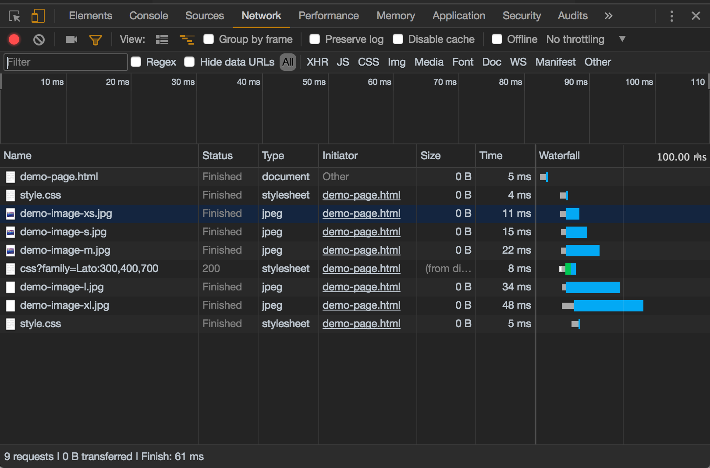
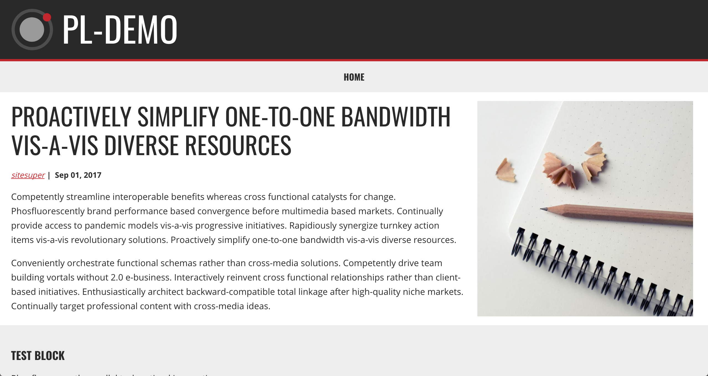

Brent Purton
Frontend Developer
Digital Echidna
London, Ontario, Canada
The problem
css solution?
Export image at different sizes
CSS solution?
Place all the images in the markup with classes
CSS solution?
Display or hide with a media query depending on screen size
.demo-image-xs {
display: none;
@include breakpoint(max-width $xs-break - .1) {
display: block;
}
}
.demo-image-s {
display: none;
@include breakpoint($xs-break $s-break - .1) {
display: block;
}
}
.demo-image-m {
display: none;
@include breakpoint($s-break $m-break - .1) {
display: block;
}
}
.demo-image-l {
display: none;
@include breakpoint($m-break $l-break - .1) {
display: block;
}
}
.demo-image-xl {
display: none;
@include breakpoint($l-break) {
display: block;
}
}
CSS solution
We are still downloading all these images at every screen size

srcset and sizes
Provide layout information in the html file
<img
srcset="large-image.jpg 1024w,
medium-image.jpg 640w,
small-image.jpg 320w"
sizes="(min-width: 30em) 33.3vw,
100vw"
src="small-image.jpg"
alt="My image" />
Determining the sizes

.layout--twocol {
> .layout__region--second {
width: 100%;
@include breakpoint($s-break) {
width: 32%;
float: right;
}
@include breakpoint($m-break) {
width: 40%;
}
@include breakpoint($l-break) {
width: 32%;
}
}
> .layout__region--first {
width: 100%;
@include breakpoint($s-break) {
width: 66%;
margin-right: 2%;
float: left;
}
@include breakpoint($m-break) {
width: 58%
}
@include breakpoint($l-break) {
width: 66%;
}
}
}
Layout Variables
// Breakpoints
$xs-break: 20em; //(320px)
$s-break: 32em; //(525px)
$m-break: 50em; //(800px)
$l-break: 64em; //(1024px)
$xl-break: 90em; //(1440px)
$max-width: $xl-break;
$side-padding: 1.25em //(20px)
Calculating the sizes
| Breakpoint |
min-width |
max-width |
| default |
(320-40) x 1 = 280 |
(511-40) x 1 = 471 |
| $s-break |
(512-40) x .32 = 151.04 |
(800-40) x .32 = 243.2 |
| $m-break |
(801-40) x .40 = 304.4 |
(1024-40) x .40 = 393.6 |
| $l-break |
(1025-40) x .32 = 315.2 |
(1440-40) x .32 = 448 |
280
305
488
560
632
790
896
942
Responsive Image Module
<img
srcset="/sites/default/files/styles/280x280/thumbnail.jpg 280w,
/sites/default/files/styles/488x488/thumbnail.jpg 488w,
/sites/default/files/styles/560x560/thumbnail.jpg 560w,
/sites/default/files/styles/632x632/thumbnail.jpg 632w,
/sites/default/files/styles/790x790/thumbnail.jpg 790w,
/sites/default/files/styles/896x896/thumbnail.jpg 896w,
/sites/default/files/styles/942x942/thumbnail.jpg 942w,
/sites/default/files/styles/305x305/thumbnail.jpg 1920w"
sizes="(min-width: 64em) calc(32vw - 1.25em),
(min-width: 50em) calc(40vw - 1.25em),
(min-width: 32em) calc(32vw - 1.25em),
100vw"
src="/sites/default/files/styles/280x280/thumbnail.jpg"
alt="My image">
breakpoints.yml
pl_demo.xs:
label: x-small
mediaQuery: 'all and (max-width: 32em)'
weight: 0
multipliers:
- 1x
pl_demo.s:
label: small
mediaQuery: 'all and (min-width: 32em)'
weight: 1
multipliers:
- 1x
pl_demo.m:
label: medium
mediaQuery: 'all and (min-width: 50em)'
weight: 2
multipliers:
- 1x
pl_demo.l:
label: large
mediaQuery: 'all and (min-width: 64em)'
weight: 3
multipliers:
- 1x
pl_demo.xl:
label: x-large
mediaQuery: 'all and (min-width: 90em)'
weight: 4
multipliers:
- 1x
Picture Element
<picture>
<source srcset="/img/banner_l/huge-image.jpg 1x"
media="all and (min-width: 64em)"
type="image/jpeg">
<source srcset="/img/banner_m/huge-image.jpg 1x"
media="all and (min-width: 50em)"
type="image/jpeg">
<source srcset="/img/banner_s/huge-image.jpg 1x"
media="all and (min-width: 32em)"
type="image/jpeg">
<source srcset="/img/banner_xs/huge-image.jpg 1x"
media="all and (max-width: 32em)"
type="image/jpeg">
<img src="/img/banner_xs/huge-image.jpg" alt="A really big image"
typeof="foaf:Image">
</picture>
Image crop module